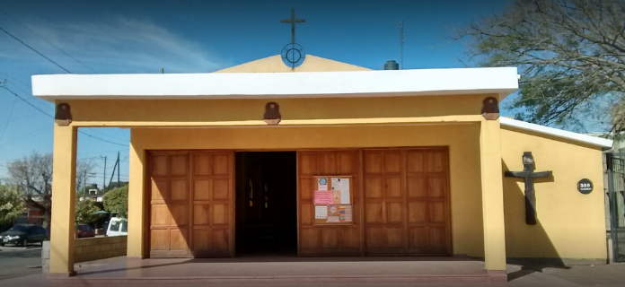

Inicios
El IPEM N.º 123 – Blanca Etchemendy inicia sus actividades en 1989, surgió como una necesidad de la zona, que por entonces no contaban con una escuela de nivel medio, y comenzó a funcionar en la iglesia Nuestra Señora del Trabajo. 👇 A mediados de los años ‘90 ya contaba con edificio propio, en la intersección de Carmelo Ibarra y Cosquín (hoy, Neiva), debido a la creciente matrícula, incorporando a más personal docente.
Los '90
Hasta la reforma educativa, acaecida a fines de los ‘90, los alumnos egresaban con un bachillerato técnico, los varones aprendían electricidad y las mujeres oficios del hogar. Hoy, el establecimiento cuenta con dos orientaciones, una en humanidades y la otra en economía y gestión, con una población escolar de aproximadamente de 500 alumnos, la mayoría en el turno mañana. El 60 por ciento del alumnado proviene de la misma zona de Villa El Libertador. El resto de barrios aledaños o más lejanos.
Actualmente cuenta con numerosos legajos de matrículas, debido a lo peculiar de su enseñanza desde la inclusión social, influyendo de manera directa en el deficiente desarrollo de las inscripciones, por cuanto el proceso de matriculación y control de notas se lo maneja de una manera manual e insegura, ya que la información es almacenada en sus respectivos archivos, retrasando los procesos de búsqueda de cada legajo de los estudiantes, y a la vez, poniendo en peligro la información confidencial de cada educando, ya que puede ser extraviada, plagiada o dañada por desastres naturales u otros. El trabajo se torna demasiado pesado, se congestiona la institución durante el proceso de matriculación, algunas de las actividades se atrasan, la información se procesa muy lentamente; todas estas dificultades repercuten en las diferentes áreas con la que cuenta la institución. La información procesada manualmente es manejada por 11 docentes con cargos administrativos, docentes en pasividad por la disminución o pérdida de las aptitudes para la docencia activa, cargos jerárquicos como Coordinadores, Prosecretaría y Secretaría, y equipo directivo, quienes llevan la labor de desempeñar dicho trabajo, pero nunca se ha llevado un control de datos de una manera automatizada y computarizada, organizadamente y de manera relacional que les permita que la información sea ágil, eficiente y eficaz.
A su vez, la institución cuenta con aproximadamente 100 docentes con horas cátedras de los cuales el control de la asistencia recae en un solo personal y en forma manual, y estos docentes son los encargados de registrar las notas de calificaciones de cada curso a su cargo con el uso de diferentes planillas, teniendo un tiempo estipulado para entregarlas y poder confeccionar las libretas de alumnos. Dicho tiempo no siempre se cumple, lo que demora la entrega de libretas.